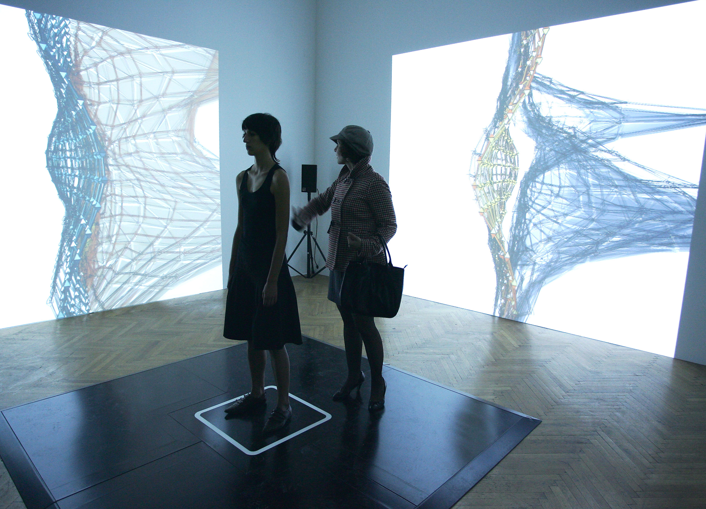
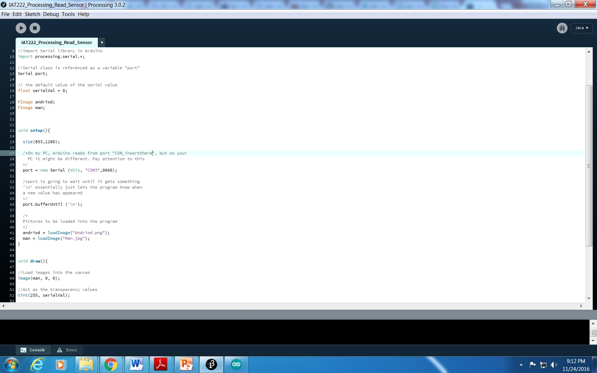
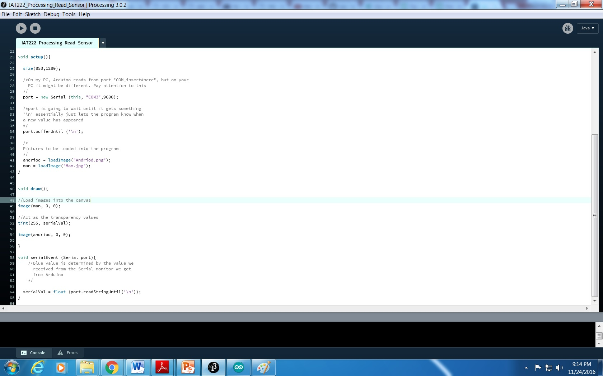
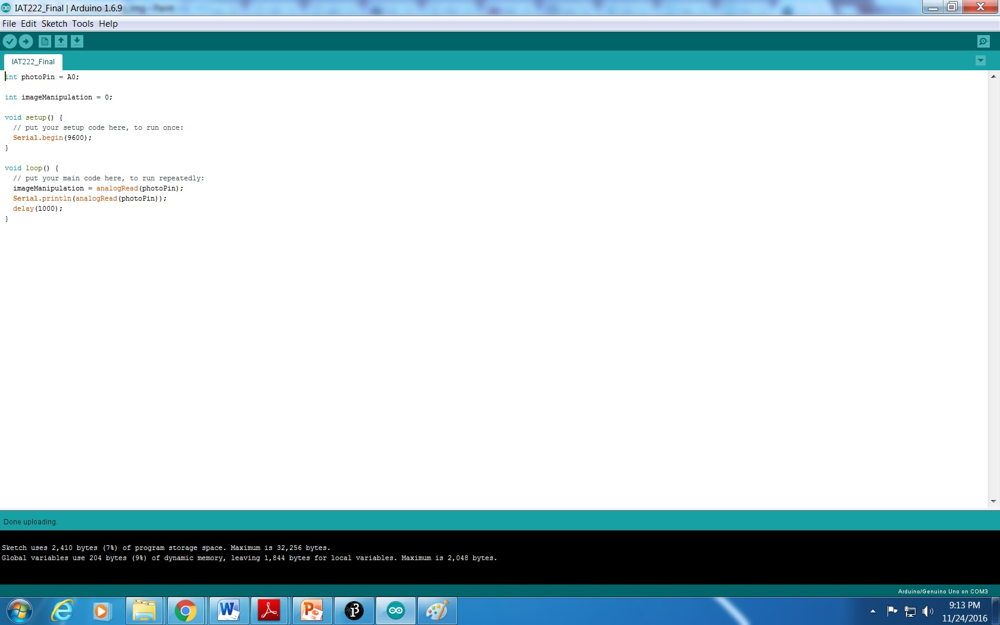

Humanity In-Dependence

Humanity In-Dependence consists of a single screen projection of an image that can change based off of audience interaction.
The audience can interact with the artwork by shining a flashlight at the light sensor located inside the grey box container. Upon detecting the flashlight, the screen will switch back and forth between that of a human face and a robotic face. The challenge I met was the projected image was initially a static image. I should make the image to be more dynamic prior to the prompt of the flashlight so that the artwork is less static when seen from a distance. To solve the problem, I re-programmed in the processing of the image. so that it would fade back and forth between the two images via a timer.The audience can continue manipulate the image for as long as they have the flashlight aimed at the light sensor or until they decide to leave. The project requires a person to input a light source in reality which will manipulate the digital space through a computer. I found that the primary visual feedback given by digital image manipulation requires both human and machine working together for a successful interaction to take place.
 